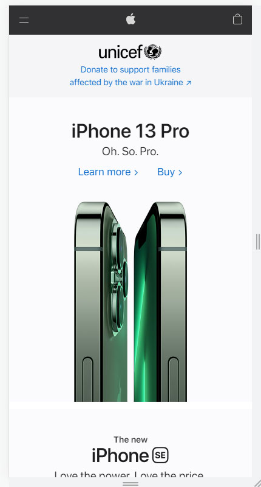
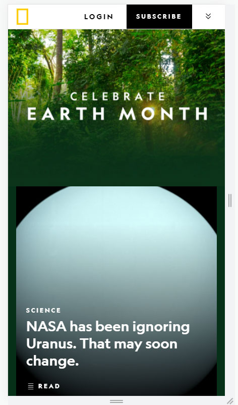
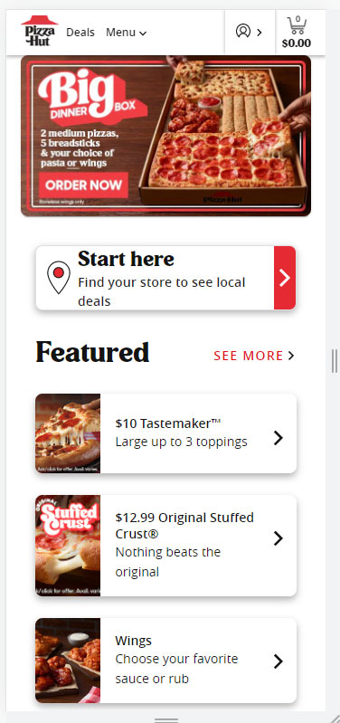

White Space and Clean Design
Apple
apple.com I choose this website for an example of whitespace because nothing feels crowded, they use their space effectively and keep the design simple and clean. Nothing on this site is distracting.
Contrast
National Geographic
nationalgeographic.com I choose this website for contrast because of the distinct difference between the colors of the foreground and background. Everything pops on their page because of the contrast. It's legible and simple.
Visual Hierarchy
Pizza Hut
Pizza Hut I was suprised at the neatness of their website. While selling something so simple, they were able to keep their products organized by using the F pattern in their design with the different boxes for each option. Using Visual Hierarchy, the information was prioritized placing key information by importance.